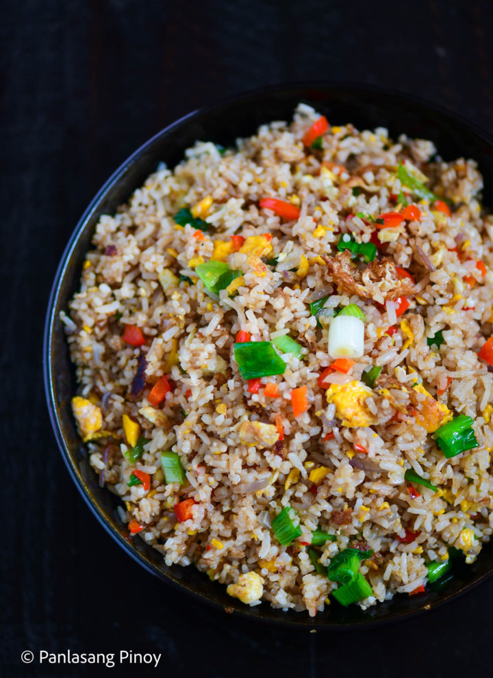
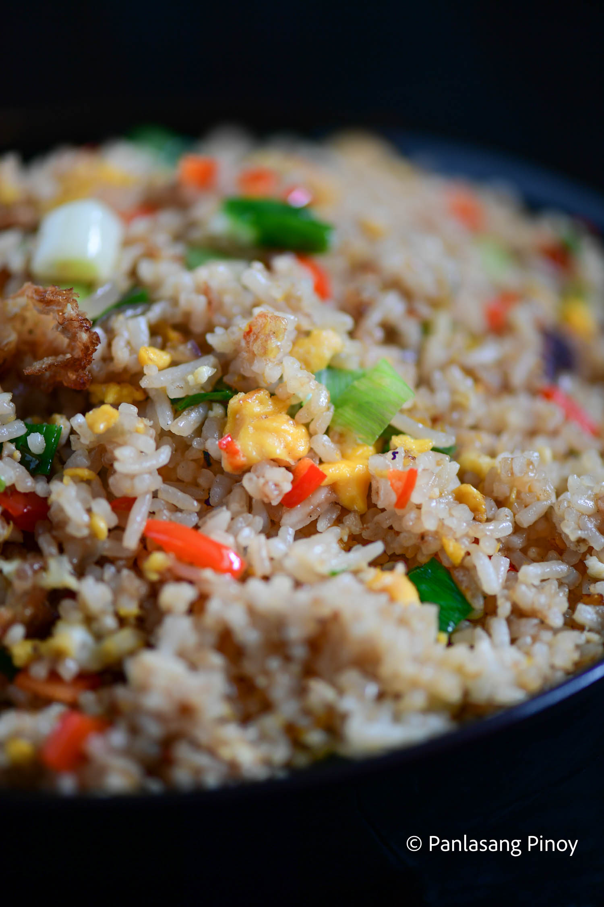

Egg fried rice and fried rice in general, really is a huge part of Asian cuisine. We know how much Filipinos love rice, and for other Asian countries this is no different. From Thailand to India to Japan, each nation has their own version of fried rice that they know and love. Even the Philippines has its own different variants and renditions! Indeed, fried rice is a very generic term that houses a lot of cultures across different countries. But Chinese fried rice is almost transcendental in its fame; its being beloved worldwide.
No fuss, no frills, all deliciousness that’s the magic of the glorious egg fried rice. Whether you’re busy working or drowning in school requirements, no quick fix meal speaks to the heart like this takeaway staple. By simply tossing all its ingredients together, egg fried rice is one of the easiest and most delicious meals you can make. It’s got all sorts of elements that appeal to every palate the sweet, the savory, the spicy. A meal all on its own, learning how to make this dish isn’t just a must for the busy bees, but for everyone! Egg fried rice has Chinese origins; like the Philippines, China has a bunch of different fried rice recipes of its own. This variant of fried rice may be one of, if not the most basic. However, what it lacks in grandeur it makes up for in its colorful appearance, inviting smell—and phenomenal taste! If you’re looking for a timeless yet creative way to spin your leftover rice, this dish is truly the way to go.
Making egg fried rice is as easy as tossing all your ingredients together literally! Begin by cracking 4 eggs and placing them in a bowl. Then, after heating some oil in a wok, pour them in, cooking them until the side on the pan turns brown and somewhat crispy. Turn the eggs over, doing the same to the other side. Your peppers, both bell peppers and sweet peppers, go in next, as do you onions. Sauté the ingredients for a minute while breaking the eggs apart. Next, add in half of your leftover rice, stir frying for about 2 minutes. Add the rest of your rice in, and continue cooking and tossing until you’ve incorporated all of your ingredients well.
Make your egg fried rice smell—and taste—even better by adding sesame oil and soy sauce. For 2 minutes, stir fry your rice even further, then add salt, sugar, and your green onions. Toss your egg fried rice one last time, before turning the heat off the stove and transferring it to a serving plate.
Alongside your favorite main dish, your egg fried rice is 100% ready to be enjoyed! Let your family dig into this fantastic and filling fried rice and don’t forget to let us know what you think!